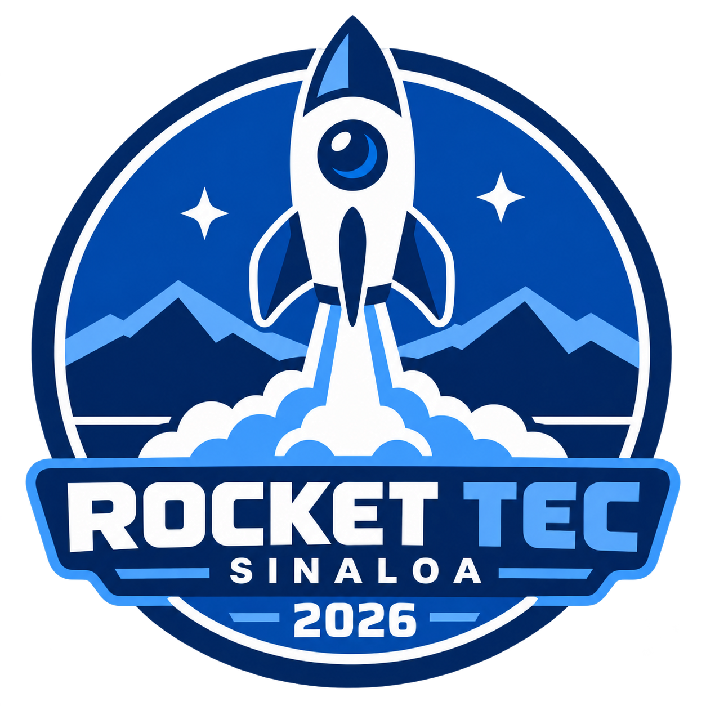

×
×
Rocket Tec Sinaloa · 2026
APOLO 5 forma parte del proyecto Rocket Tec Sinaloa 2026.
NO VENIMOS
A SEGUIR
EL MAPA.
Diseñamos, probamos y lanzamos con una idea fija: el límite solo existe hasta que alguien decide cruzarlo.
La ambición no se anuncia.
Se demuestra.
APOLO 5 es un equipo que convierte la curiosidad en ingeniería, los cálculos en decisiones y cada prueba en una nueva forma de llegar más lejos.
Sistemas activos · lanzamiento final confirmado
El cielo va a
tener noticias.
Esta es la cuenta regresiva oficial para el lanzamiento final. El miércoles 2 de diciembre, APOLO 5 deja de ser una idea y se convierte en trayectoria.
 ×
×Un equipo.
Un proyecto.
APOLO 5 es el equipo 5 del grupo 4 y forma parte de Rocket Tec Sinaloa 2026. Nuestra identidad conserva el contraste negro, blanco y azul eléctrico para representar una misión que va más allá de los límites.
Volver a despegar ↗APOLO 5 · EQUIPO 5 · GRUPO 4
Lo imposible solo
está esperando.
MÁS ALLÁ DE LOS LÍMITES · ROCKET TEC SINALOA 2026